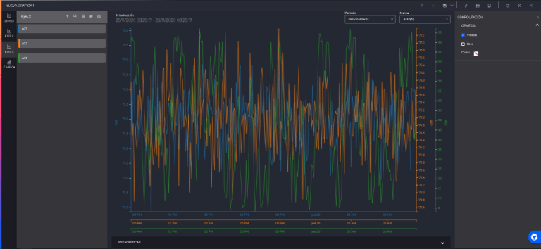

Graphics
- 1 Introduction
- 2 Trend graph
- 3 Grouped graph
- 4 Real-time graph
- 5 Configurator
- 5.1 Series
- 5.1.1 Dates
- 5.1.2 General
- 5.1.3 Appearance
- 5.1.4 Asintotas
- 5.2 Y-axis
- 5.2.1 General
- 5.2.2 Associated series
- 5.2.3 Asintotas
- 5.3 X-axis
- 5.4 Type of graph
- 5.4.1 Trend configuration
- 5.4.2 Grouped configuration
- 5.4.3 Real-time configuration
- 5.5 Templates
- 5.1 Series
- 6 Toolbar
- 7 Common elements
- 7.1 Statistics panel
- 7.2 Fixed tooltips
1. Introduction
One of the analysis tools available in the system are the graphs. The application allows the following types of graphs:
- of historical data, called Trend
- by time groupings, called Clustered
- in Real time
- and Scatter (disabled).
Graphs can be created from the shortcut section (1), from the launcher (2) or from the shortcut (3).
1) To create the graph from the launcher you need to have signals in “My Signal Selection”, select the signals you want to have in the graph and press one of the buttons corresponding to the desired graph type. Note: In the signals section of the explorer, by clicking on the button , that signal will be added to “My signal selection”.
2) From the shortcut section only the trend graph will be available. Pressing the button will open a trend graph with the selected signals and with a period of one week.
3) Clicking on the chart shortcut will display the options to create a new chart or to create a chart template. Clicking on either of them will open the chart creation wizard. If we do not have permissions to view the inventory, the option to create a template will not be displayed.

- Type of graph Correlation and scatter plots are disabled.
- Signals Will only be displayed if you click on “New graph” (A). A minimum of one signal must be selected and the maximum value configured in the configuration file will be used.
- Templates It will only be displayed if you click on “New template” (B) first. You have to select at least one template and no more than three. Only templates with at least one attribute of type signal will be shown.
- Attributes It will only be shown if you click on “New template” (B). Allows you to select attributes for each of the templates selected in the previous step. You have to select between one and three attributes. Only signal type attributes will be shown.
- Dates Allows to select the dates configuration of the chart. It will apply to all series.
Once the initial configuration is set, the configured graph will be displayed on the screen. The central area, the graphical representation corresponds to the previously selected configuration type of graph, dates and series.
On the left side there is a drop-down menu to modify the graph configuration (1). Switching between the different sections of the menu will display the configuration menu located in the right panel (3) which will show options specific to the selected menu. This menu will be hidden by default until the cogwheel (2) is clicked.

The toolbar is located at the top right.
2 Trend graph
The "Trend graph " functionality allows the representation of a set of historical data at different resolutions on a collection of points. It also allows the representation of statistical data and the application of mathematical functions for data monitoring.
For the creation of this type of graph, in addition to the options explained in the previous section, the tool has a direct access from the document explorer, for the quick creation of this type of graphs once the series have been selected.
By default, this graph will be configured with the period of the last 24 hours and marked Auto.

From the graph representation itself, it allows us to quickly change the configuration of the period, allows the introduction of different time intervals to perform the queries and the mark, frequency at which the data is displayed.
Different interaction modes are available to analyze the selected time window.
- Zoom by dragging with the left click on the graph to zoom in on the timestamp, this action can also be performed in the browser.
- Dragging the navigator with left click to move in time.
- Drag the navigator from the edges to increase or decrease the time interval.
- Right click dragging in the direction you want to move forward or backward in time.
- Mouse wheel to increase or decrease the time interval (Configurable in the configuration file).
- Using the navigation buttons that appear at the bottom of the graph when you move the mouse over that area (image below). They will allow to move forward and backward in time, as well as to increase or decrease the displayed time interval.
You can configure general parameters of the graphic in the configurator.
3 Grouped graph
The clustering plot allows to represent the historical data of any signal by displaying/clustering the values in common time scales allowing to visualize the patterns in different time groupings of the signals. The clustering can be done according to different statistical clustering measures.
From the graph representation itself, it allows us to quickly change the configuration of the period, allows the introduction of different time intervals to perform the queries and the statistical type.
You can configure general parameters of the graphic in the configurator.
4 Real-time graphic
This type of graph allows you to consult the values of the selected signals in real time. The values shown at the bottom of the Y-axis may vary depending on whether there are data readings with nearby values.
Unlike the other graphs, in real time you do not select a time interval to graph, but you select a number of samples. When a real time graph is loaded, the last X data, selected in the third step of the wizard, will be loaded. By default, this setting will take the value present in the configuration file.
The time axis will be adjusted to the received samples. It may happen that two signals with a very different base frequency are plotted, and in this case the graph will not be displayed correctly. For example, if signal 1 has its maximum frequency at 1 hour and signal 2 has it at 1 second and with the graph configured at 300 samples, the data of signal 1 will occupy 5 days, while those of signal 2 will occupy 5 minutes. In this case, signal 2 will be barely visible at the end of the time axis in the graph, so a warning will be displayed recommending to hide one of the signals. Hidden signals will not be taken into account for the calculation of the X-axis interval.
You can configure general parameters of the graphic in the configurator
5 Configurator
The chart configurator is divided into 4 sections, represented by the icons in the left sidebar (1) that give access to each section. Clicking on each of them will expand a panel next to it with the section. By default there will be no section selected. Clicking on the already selected section will hide it.
5.1 Series
Displays the series represented in the graph and has the following actions in the toolbar:

- Add: This action will open a new window allowing the insertion of new signals or functions to the graph without having to open a new graph from scratch. If we want to add functions we will have to look for the “Functions” section in the lower left part of the window.

- Duplicate: Allows the duplication of the selected series with its configuration.
- Delete: Deletion of the selected series.
- Hide: Allows the selected series to be hidden and displayed on the chart.
In addition to adding, copying, deleting, displaying/hiding series on the graph, the option is given to perform configuration. There are two types:
- Single: changes made will apply to only one series.

- Multiple: the changes made will apply to all selected series. If no series is selected, they will all be counted as selected.
In the multiple configuration it is not possible to edit all configurations as it is in the single configuration.
List of locked configurations in multiple editing:
- Edit the title of a series.
- Change the tag or function of a series.
- If the selected series use different units, it is not possible to edit the units.
- If the selected series have different signal types, it will not be possible to edit the statistical type.
If within our selection we have selected a function, the following fields will be blocked:
- Statistical type
- Units
If we are performing a multiple edition, a list with all the series of the graph will be displayed. When a field is shown in which each series has a different value, the field will be shown with an empty value.

A selected series changes its background color to the corporate color. To select or deselect a series, left-click on it. You can use the “Shift” key to quickly make a multiple selection. To do this, select the first series in the list that you want, and then click on the last series while holding down the “Shift” key, all series between the first and the last one will be automatically selected.
It will also be possible in this list to reorder the series by dragging them with left click.
The configuration of a series is divided into 4 blocks:
5.1.1 Dates
Allows you to select the time interval for which the data will be displayed. You can type the dates in the text field or click on the calendar (1) to open the date selector.
5.1.2 General
Allows you to select the characteristics related to the configuration of the series data.
- Title: Allows to change the name of the series. This will be the name by which the series is identified in the interface (legend, menus, etc.).
- Signal: Allows to change the signal shown in the graph for another one chosen from the Signal Selector. If we are in trend, the selection of functions will also be allowed.
- Units: In case the selected signal has a unit associated with it, a unit conversion may be applied to the data represented (from among the conversions available for that unit).
- Statistical type: Allows to select the statistical type (when the represented data are not raw data). The options depend on the type of signal selected:
- Analog signals: Mean, maximum, minimum, variance, standard deviation, count, cumulative, maximum and minimum and standard deviation from the mean.
- Discrete signals: Count, mode, count of true values and count of false values.
- Digital signals: Count and mode.
- Functions: Discrete type selection is not available for functions**.
-
Interpolation: Select the interpolation to be applied. It can be No interpolation, Linear, Step before and Step after.
- Mark: Allows to select the frequency for which the data will be requested. If the resolution is greater than ‘Max’ it will be statistical data, otherwise it will be raw data. The Auto option allows the mark to be adjusted dynamically according to the selected time period. It will be possible to write marks higher than the last displayed mark. If the mark entered is hours, it will be set to a divisor of 24 hours. Example: If 7 hours are entered, it will be automatically changed to 8 hours. If 10 hours are entered, it will be automatically changed to 12 hours.
5.1.3 Appearance
Allows you to select the display characteristics of the series on the graph.

- Line type: Allows you to modify the format of the graphical representation. The options are:
- Line: Series of segments connecting the signal values.
- Smooth line: Smooth curve connecting the signal values.
- Stepped line: Series of segments similar to the line, but using only vertical and horizontal lines to connect the signal values (the line will be horizontal until we have a new value, when it will be joined by a vertical straight line).
- Area: Generates a defined area between zero and the signal values with the line type.
- Column: Series of columns for each signal value.
- Marker: Only the values of the series will be displayed in dotted format.
- Visible: Allows to configure the visibility of the series.
- Marker color: Allows to configure the color of the markers of each of the values represented.
- Marker thickness: Allows to configure the size of the markers of each of the represented values. If it is 0, they will not be displayed.
- Marker border color: Allows to configure the border color of the markers.
- Marker border thickness: Allows to configure the thickness of the markers border. If it is 0 it will not be shown.
- Line color: Allows to configure the color of the lines that join the different values.
- Line thickness: Allows to configure the thickness of the line. In case of being 0 no lines will be shown (dot plot).
- Line style: Allows to change the line style. Useful to differentiate two series with the same color.
- Opacity: Allows to change the opacity of the area fill.
- Column color: Allows to change the color of the columns when we are in column mode.
The column color is only available with Column line type. In column type only the column color will be available. The opacity is only available with row type Area.
- Status icons: Allows the markers whose value has a status change to show the icon that represents that status.
- Show gaps: Button that acts as a shortcut to filter the “OutOfDate” status.
- Hide invalid: Button that acts as a shortcut to filter the “Invalid” status.
- Filter statuses: filter by the different statuses registered at application level.
5.1.4 Value marking
Allows to configure a series so that when its values are higher or lower than another series the values are marked with an area. If there is no compatible series in the graph this section will be locked.

-
Reference series: Here you select the signal with which to contrast the values. For a series to be compatible and allowed to be selected it has to fulfill 2 conditions. 1) The date configuration must be the same. 2) The series have to be associated to the same axes, both X and Y.
-
Type of marking: Field to indicate if we want the values to be marked to be the upper or the lower ones.
5.1.5 Asymptotes
Allows the configuration of a line associated to the series with an editable value. At the top we find 3 buttons to add asymptotes.
- Add asymptote: Allows to add an asymptote (associated line). Each added asymptote will be displayed in a list in this section and can be configured.
- Add representative limits: The asymptotes corresponding to the representative limits for the selected signal will be added (they correspond to the maximum and minimum of the signal’s own configuration). If they are already added, the button will change to delete them.
- Add maximum, minimum and average: 3 lines will be added for the selected signal corresponding each one to the maximum, minimum and average value of the data shown by that signal in the representation. If they are already added, the button will change to delete them.
The following properties can be configured for each asymptote:
- Title: Allows to change the name of the asymptote, which will be displayed on the graph.
- Value type:
- Custom: We will indicate in the value field the position of the asymptote.
- Maximum representative: It will position the asymptote at the maximum value of the series configuration.
- Representative minimum: Will position the asymptote at the minimum value of the series configuration.
- Maximum: It will position the asymptote at the maximum value of the painted data of the series.
- Minimum: Will position the asymptote at the minimum value of the painted data of the series.
- Average: It will position the asymptote at the average value of the painted data of the series.
-
Value: Position of the asymptote. If the asymptote is not of type “Custom” this property cannot be modified.
- Line type: Allows to modify the format of the asymptote representation in the graph.
- Color: Allows to configure the color of the asymptote.
- Value marking: Allows to define the rolling bands (upper and lower limits). If enabled, the values of the series passing over the asymptote position will show an area towards the asymptote.
5.2 Y-axis
Displays the axes represented in the graph and has the following actions in the toolbar:

- Add: This action will add a new Y axis.
- Duplicate: Allows the duplication of the selected axes with their configuration.
- Delete: Deletion of the selected axes.
- Hide: Allows the selected axes to be hidden and displayed on the graph.
If an axis does not have an associated series it will not be represented in the graph.
In addition to adding, copying, deleting, displaying/hiding axes on the graph, the option is given to perform . There are two types:
- Single: changes made will apply to only one axis.
- Multiple: changes made will apply to all selected series. If no axis is selected, all will be counted as selected.

In the multiple configuration it is not possible to edit all configurations as it is in the single configuration.
List of locked configurations in multiple Y-axis editing:
- Edit the title of an axis.
- Associated series configuration.
When displaying a field in which each axis has a different value, the field with the empty value will be displayed.
A selected axis changes its background color to the corporate color. To select or deselect an axis left click on it. The “Shift” key can be used to quickly make a multiple selection. To do this, select the first axis in the list that you want, and then click on the last one while holding down the “Shift” key, all axes between the first and the last one will be automatically selected.
It will also be possible in this list to reorder the axes by dragging them with left click.
The configuration of an axis is divided into 3 blocks:
5.2.1 General
Allows to select the general characteristics of the selected Y-axis.

- Title: Allows to modify the title of the axis.
- Visible: Check box to modify the visibility of the axis.
- Grid: Check box to show or hide the horizontal lines.
- Color: Allows to modify the color of the axis.
- Logarithmic scale: Checkbox to change the scale with which the values will be represented (between normal and logarithmic).
- Position: Allows you to change the position of the axes (between left and right).
- Adjustment: Configures the scale of the axis. The options are:
- Auto: The axis is automatically adjusted to the values of the signals linked to the axis.
- Manual: Two additional settings are displayed to indicate the Min and Max of the axes.
- TAG setting: The maximum and minimum values configured in the signal are used as maximum and minimum. For this option to be available, the axis can only have a series associated with an analog signal.
5.2.2 Associated series
Displays the list of series linked to the selected axis, accompanied by a checkbox that will be checked if the series belongs to the selected axis. A series can be linked or unlinked to an axis by checking or unchecking the box. If an axis has no associated series, it will not be shown in the graph.
5.2.3 Asymptotes
Allows the configuration of a line associated to the axis with an editable value. At the top we find 2 buttons to add asymptotes.

- Add asymptote: Allows to add an asymptote (associated line). Each added asymptote will be displayed in a list in this section and can be configured.
- Add maximum, minimum and average: 3 lines will be added for the selected signal, each corresponding to the maximum, minimum and average value of the data displayed on the axis. These data correspond to the grouping of all the series associated with the axis. If they are already added, the button will change to delete them.
The following properties can be configured for each asymptote:
- Title: Allows to change the name of the asymptote, which will be displayed on the graph.
- Value type:
- Custom: We will indicate in the value field the position of the asymptote.
- Maximum: It will position the asymptote at the maximum value of the painted data of the series.
- Minimum: Will position the asymptote at the minimum value of the painted data of the series.
- Average: It will position the asymptote at the average value of the painted data of the series.
-
Value: Position of the asymptote. If the asymptote is not of type “Custom” this property cannot be modified.
- Line type: Allows to modify the format of the asymptote representation in the graph.
- Color: Allows to configure the color of the asymptote.
- Value marking: Allows to define the rolling bands (upper and lower limits). If enabled, the values of the series passing over the asymptote position will show an area towards the asymptote.
5.2.4 Examples configurations
Examples - axis level configurations: (a) Axis visible; grid visible; axis position: left; associated series: one series of the 2 that the graph has; no asymptotes.

b) Axis visible; grid: not visible; axis position: right; associated series: all; added asymptotes with max, min, and mean value.

5.3 X-axis
Displays the axes represented in the graph and has the following actions in the toolbar:
- Add: This action will add a new Y axis.
- Duplicate: Allows the duplication of the selected axes with their configuration.
- Delete: Deletion of the selected axes.
- Hide: Allows the selected axes to be hidden and displayed on the graph.
If an axis does not have an associated series it will not be represented in the graph.
In addition to adding, copying, deleting, displaying/hiding axes in the graph, the following configuration options are available . There are two types:
- Single: changes made will apply to only one axis.

- Multiple: the changes made will apply to all selected series. If no axis is selected, all will be counted as selected.
In the multiple configuration it is not possible to edit all configurations as it is in the single configuration.
List of locked configurations in multiple Y-axis editing:
- Edit the title of an axis.
- Change the tick interval.
- Configuration of associated series.
When displaying a field in which each axis has a different value, the field with the empty value will be displayed.
A selected axis changes its background color to the corporate color. To select or deselect an axis left click on it. The “Shift” key can be used to quickly make a multiple selection. To do this, select the first axis in the list that you want, and then click on the last one while holding down the “Shift” key, all axes between the first and the last one will be automatically selected.
It will also be possible in this list to reorder the axes by dragging them with left click.
The configuration of an axis is divided into 3 blocks:
5.3.1 General
Allows to select the general characteristics of the selected X-axis.

- Title: Allows to modify the title of the axis.
- Visible: Check box to modify the visibility of the axis.
- Grid: Allows to display vertical lines for each time division of the x-axis.
- Tick interval: By default its value is Auto allowing the time interval marks to be displayed on the x-axis to be automatically adjusted according to the time period configured in the graph. When selecting another value from the drop-down list, the X-axis will display tick marks according to the chosen value.

- Color: Allows to modify the color of the axis.
5.3.2 Associated series
Displays the list of series linked to the selected axis, accompanied by a checkbox that will be checked if the series belongs to the selected axis. A series can be linked or unlinked to an axis by checking or unchecking the box. If an axis has no associated series, it will not be shown in the graph.
5.4 Types of graphics
Allows you to change the chart type to one of the other chart types available in the system. Due to incompatibilities between all chart types when changing the type only the selected signals and dates will be taken into account. Also, not all charts support the same types of signals. When it is the case that they are not compatible the series will be deleted. If no signal is compatible, the signal selector will be opened so that the chart does not remain empty. When you change the type of graph the current configuration is not lost, it remains stored until you select that type of graph again. For example, if you are editing a trend chart and by mistake you change it to grouped, you will be able to return to trend and the configuration will not be lost.
From the “Configuration” button the right side panel will be displayed, which allows you to modify the general options of the chart in question. Some settings are common to all graph types:
- Graph: allows you to configure whether the trend graph will be of type Simple: default option, all series share axis regardless of their scale.
- Simple: default option, all series share the same axis regardless of their scale. It allows to configure the axes by accessing the Y axes configuration.
- Multiaxes: Since each signal contains different scales due to the value of its data, with the option of multiple axes it is possible to visualize the values of the different signals at the same time with their corresponding axes (these axes will be configurable). Within this configuration for each series we can define a Maximum and Minimum value for the axes, so that the axes are not self-adjusted by their values but allow us to observe the signals on the scale that we decide.
- Multigraphic: This option allows the visualization of the series separately, each one on an axis.
- Theme: Allows you to change the colors, the effects of the graph display. The options are Light, Sand and Dark.
- Legend: Allows to show/hide the legend (1) of the chart.
There are also specific options for each graph:
5.4.1 Trend configuration
- Navigator: Allows to show/hide the lower navigation bar (2), located below the X-axis, and allows to modify the time period represented in the graph area. The 2 black marks (3 and 4) represent the time period displayed on the graph.
- Navigator series allows to select which of the signals configured in the graph will be used to represent it in the Navigator.
5.4.1 Grouped configuration
- Stacking: Allows to represent the data of the graph accumulated one on top of the other. The first image has the stacking deactivated and the second one activated.
- Grouped by: You can choose whether you want to group by time intervals or group by each signal.
- Grouped X (Level 1): Temporal grouping that will be calculated for the X-axis.
- Grouped X (Level 2 Multilevel): When selected, a second X-axis will be created with the selected grouping to have more extensive information.

- Show empty categories: If any displayed category has no value, it will be allowed to hide it using this button.
- Grouped Y (Heat map): Selecting this will switch to a heat map display using the two groupings. The values represented are the same as in Multilevel mode.

- Heat map series: In heat map mode only one series can be displayed. With this selector you can choose which one to display.
If we are in Multilevel mode we will not be able to activate the heat map mode, and vice versa.
5.4.1 Real-time configuration
The real time graph does not present any specific configuration.
5.5 Templates
Document templates are a tool to be able to use the same chart configuration to represent the signals of different assets in the inventory.
If when creating the chart we select “New Template” this new section will appear (1).

Within it we can distinguish 3 different sections.
1) On the one hand, the left panel (2) will show the list of all the selected templates. By default, the ones selected in the wizard will appear, but we can add up to 3.
2) In the upper bar we will have an asset selection button (3). When a template is opened for the first time an asset is automatically selected for each template on which to paint the graph, and from this button you can change them for others.
3) The right panel will only be visible when a template is selected in the left panel (1). It will show a list (4) of all the attributes compatible with the graph, and those that are represented will be marked as selected. If an attribute is selected, a new series will be added to the chart, and if it is deselected it will be deleted.
Template type documents can be differentiated from the rest by displaying a special icon .
If we save a document template when we open it, a modal window will open for us to select the assets we want to represent.
6 Toolbar
A toolbar will appear at the top of the trend and grouped graphs, within which different elements can be differentiated.

The first thing that appears is a summary of the date range selected in the chart. If the series have different date periods, the interval covering the dates of all the series will be displayed.
Then there is the period selector, where we can select between some predefined date periods to apply to all series. In addition, if we select the “Custom” option, it will open the date picker in order to have a more complex configuration.
Then, if we are in the trend graph, a field will be displayed to change the mark of all the series in the graph. However, if we are in the grouped chart, a field will be displayed to change the statistical type of all the series.
In addition, if we are in template mode, a button to change the selected assets will appear at the end of the toolbar.
7 Common elements
7.1 Statistics panel
At the bottom of the chart, you can find a drop-down menu which displays a panel with the statistics of the selected series in the chart’s date range. This functionality is not available in the real time chart.

7.2 Fixed tooltips
Clicking on the painted area of the graph will display a modal window to add a fixed tooltip. In this window we will be able to configure what information we want to show, besides being able to write a title and a description.
If we click on accept, the fixed tooltip will be added, which we can move around the graph, as well as close it or click on the edit button to reopen the modal window.